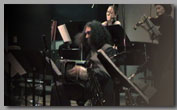
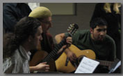

|

Performing with:
as Soloist:
| • |
Dallas Chamber Symphony 2014 |
| • |
“Maria de Buenos Aires”, Texas Tech University, 2013 |
| • |
Lexington Philharmonic, “Maria de Buenos Aires,” 2013 |
| • |
Cincinnati Opera, “Maria de Buenos Aires,” Music Hall, Cincinnati, OH, 2012 |
| • |
Quantum Theatre, “Maria de Buenos Aires, Pittsburgh, PA, 2011 |
as Musical Director:
| • |
Cuarteto Tanguero, 2012-present |
| • |
Tanguero Summer Workshop, Indiana University Jacobs School of Music, 2014 |
| • |
TTU Tango Camp, Texas Tech University, 2014 |
| • |
Ben Bogart y los Gatos Azules, 2006-2012 |
| • |
Guest Conductor, Asheville Tango Orchestra, Asheville, NC , 2011 |
| • |
Co-Director, SMITH Tango Festival Orchestra, Los Angeles,CA 2011 |
| • |
Guest Conductor, Washington DC Community Tango Orchestra, 2010 |
| • |
Musical Director, Tango de los Muertos Tango Festival, Boston, MA, 2009 |
| • |
Co-Director, San Francisco Tango Exchange, Festival Orchestra, 2008 |
| • |
Musical Director, Tango de los Muertos Tango Festival, Boston, MA, 2006 |
as an Educator
|
| |
|
 |

About Ben
Ben is a saxophonist turned Bandoneonist. He studied classical music at UC Santa Cruz, and Jazz at Berklee College of Music. He currently studies privately with the most respected Bandoneón Players in Buenos Aires (Rodolfo Mederos, Nestor Marconi, and Carlos Lázzari), and plays with the Orquesta Escuela de Tango de Emilio Balcarce, the school featured in the film Si sos brujo: A Tango Story.
In addition to playing he is working to make the world smaller for tango musicians worldwide, and to help musicians outside of Buenos Aires learn to play tango by making resources available and by teaching what he has and is learning. learn more about Ben
the Bandoneón
The bandoneón used by tango musicians was produced starting in 1925 and was exported to Argentina as a portable church organ. Quickly it found its way into the hands of tango musicians where it earned its reputation as "the soul of the tango". learn more |
|
|

Tango & Bandoneón Classes
Live Online Bandoneón Lessons
Combining his background as a music teacher, a perpetual student, and computer programmer ben is now offering online bandoneón lessons directly from Buenos Aires. contact me at ben@benbogart.com for more info, or take a look at the Bandoneón Lesson Page
Performing with:
Cuarteto Tanguero
|
|